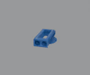

A first-timer's account — from zero Claude Code experience in April to a live department website, a 44-person tutorial, and a Blender controlled by natural language.
Jonas Sellberg · Associate Professor, BON · KTH Applied Physics
~4 weeks · built entirely in conversation with Claude Code
None for the HTML/CSS — some Python helps for the backend
kth-sci/applied-physics-aiNo frameworks. HTML files in docs/. Claude Code writes and edits them conversationally.
Every git push triggers a build: Tailwind CSS compiled, docs/ deployed automatically.
Gallery, registrations, Claude seat requests — all stored in Hypha. No database to manage.
Monitors Slack DMs, new registrations, seat requests. Relays to the agent. Sends confirmation emails.
The design brief, the HTML, the CSS, the JavaScript, the git commits, the GitHub push — all directed through natural language. Claude Code handles the rest.
The agent runs continuously. You interact via web or Slack — it acts on the repository and live site.
Open a browser, type a request in the session panel. The agent reads the request, edits files, commits, pushes. You see the change live within 60 seconds.
Jonas DMs the Slack bot: "Add a Zoom link to the May 8 page." The daemon relays the message to the agent session. The agent makes the change, pushes, replies on Slack with confirmation.
New registration → confirmation email sent automatically. Claude seat request → admin notified → approval email sent. New gallery submission → organisers notified on Slack.
The agent session runs on Hypha Cloud. The site runs on GitHub Pages. Infrastructure cost: ~zero.
The loop
"Change the hero color to match the index page"
Polls Slack every 30 s → relays message to Svamp agent session
Reads the file, edits the gradient class, runs git commit + push
Tailwind CSS rebuild → docs/ deployed to GitHub Pages
"Done — hero color updated. Live at kth-sci.github.io/applied-physics-ai"
The same pattern — agent + repository + GitHub Pages — works for a lab website, a course platform, a data portal, or an equipment booking system.
New paper published? DM the agent: "Add our new Nature Photonics paper to the publications page." Done in 60 seconds. No web developer needed.
Teaching assistant flags a confusing section at 11pm. By morning the explanation is rewritten and a new practice problem is added — while you slept.
Instrument writes to a folder. Agent monitors it, generates an HTML summary page, pushes it to a URL your collaborators can bookmark.
Registration, allocation, scheduling, confirmation — the daemon handles the entire pipeline. You approve once; the rest is automatic.
24 hours ago, I had never used Blender. Blender is a free, open-source 3D creation suite covering modelling, animation, rendering, and simulation — used everywhere from scientific visualisation to film VFX.
An open protocol (Anthropic, 2024) for connecting AI agents to external tools — databases, browsers, CAD software, instruments.
An addon for Blender that exposes its Python API as an MCP server. Claude Code connects to it and issues commands directly.
Scientific visualisations, molecular animations, instrument schematics, publication figures — described in words, built in Blender.

Visualise a volumetric dataset, a crystal lattice, or a molecular dynamics trajectory. Describe the camera angle, lighting, and colour map.
Build a schematic of your optical setup — beam paths, optics, sample stage — as a clean 3D diagram ready for a paper or grant figure.
Animate a physical process — electron dynamics, phase transitions, wave propagation — for a lecture slide or a science communication video.
Design a sample holder, a filter wheel, or a mounting bracket. Export as STL for 3D printing — described in plain language, built in minutes.
Open Claude Code in a terminal and paste the prompt below. It will walk you through the full setup step by step, adapted to your OS.
What I expected to take a week took an afternoon. The bottleneck is no longer writing code — it is deciding what to build and whether the result is correct.
This is Karpathy's point: "You can outsource your thinking, but you cannot outsource your understanding."
"Make it look nicer" produces something. "Make the hero match the slate-900 nav background, remove the orange gradient, keep the white text" produces exactly what I meant.
Domain precision matters. The prompting skills from Jonas's session directly apply here.
The agent made confident mistakes — wrong assumptions about the audience, incorrect API calls, outdated library syntax. Catching those requires knowing your field.
Applied physicists have strong judgment. That is the skill that scales with AI — not the typing.
Managing a lab with AI agents: instrument control, hardware automation, and research workflows from the terminal.